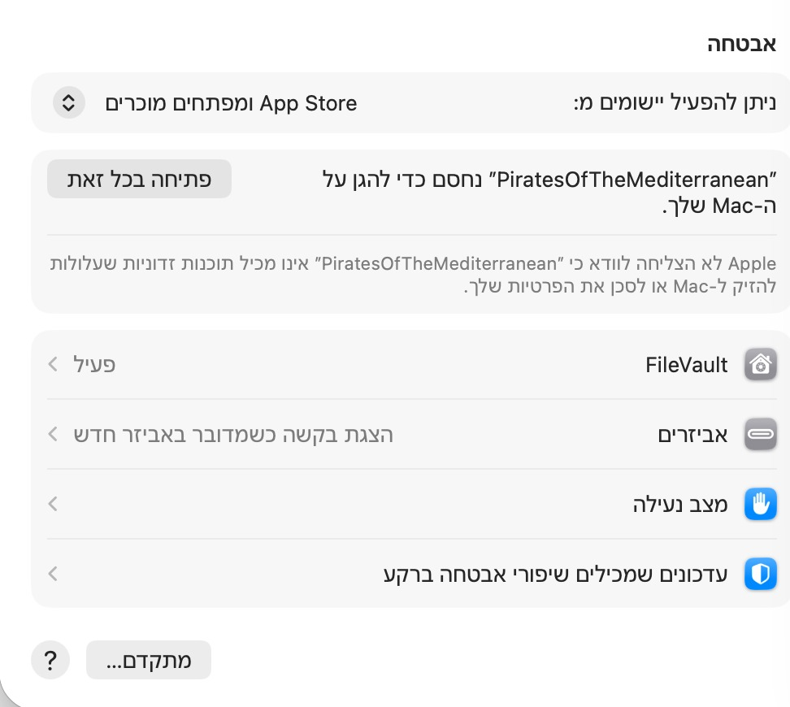

Pirates of the Mediterranean · מדריך פתיחה ל־Mac
איך לפתוח את המשחק בפעם הראשונה
החבילה מתאימה למחשבי Mac עם Intel או Apple Silicon, עם macOS 12 ומעלה. אין צורך להתקין Unity או Mono.
- הורידו את קובץ ה־ZIP למחשב ולחצו עליו פעמיים כדי לחלץ אותו.
- בתיקייה שנפתחה, לחצו פעמיים על PiratesOfTheMediterranean.app. אפשר גם לגרור את האפליקציה לתיקיית Applications.
אם Apple לא מצליחה לוודא שאין תוכנה זדונית
לגרסה הזאת אין חתימת מפתח ואימות של Apple. ההודעה הזאת כשלעצמה אינה אומרת שזוהתה תוכנה זדונית. אם זו חבילת המשחק שקיבלתם מהמפתח, אפשר לאשר את פתיחתה כך:
- סגרו את הודעת החסימה.
- עם העכבר, לחצו על סמל התפוח בשורת התפריטים העליונה במסך, ואז על הגדרות המערכת / System Settings.
- בחרו פרטיות ואבטחה / Privacy & Security וגללו למטה לאזור אבטחה.
- ליד הודעת החסימה של המשחק, לחצו פתיחה בכל זאת / Open Anyway, כפי שמופיע בתמונה.
- אם תתבקשו, אשרו בסיסמה או ב־Touch ID, ולאחר מכן לחצו פתיחה / Open.

אם הכפתור לא מופיע, נסו לפתוח את המשחק שוב ואז חזרו להגדרות האבטחה. האישור מיועד למשחק הזה בלבד; אין צורך לבטל את ההגנה הכללית של ה־Mac.
אם מופיעה הודעה אחרת, או שהמשחק עדיין לא נפתח, שלחו למפתח צילום של ההודעה המדויקת.
ב־macOS 12, חלון ההגדרות נקרא System Preferences: בחרו Security & Privacy → General וחפשו Open Anyway.
הוראות הפתיחה הרשמיות של Apple